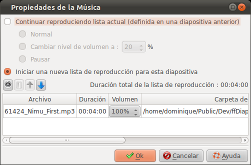

Introducción
La ventana de 'propiedades de la Música'
permite especificar la pista de música:

Esta ventana de diálogo se abre haciendo doble clic en la zona de música, en la línea de tiempo de la ventana principal.
Descripción de la ventana
Parte superior de la ventana
Funciones principales
El principio general de funcionamiento de la pista de música es que si no se cambian los ajustes, se aplicará la configuración anterior.
Entonces, si:
- Diapositiva 1 - Define una lista de reproducción
- Diapositiva 2 - No hay configuración
- Diapositiva 3 - No hay configuración
- Diapositiva 4 - Define una lista de reproducción
- Diapositiva 5 - No hay configuración
quiere decir:
- Las diapositivas 2 y 3 siguen reproducciendo la lista definida en la diapositiva 1
- La diapositiva 5 sigue reproducciendo la lista definida en la diapositiva 4
La configuración de la pista de música
Continuar la lista de reproducción actual
|
Continuar la lista de reproducción definido en una diapositiva anterior :
| Normal |
Sin configurar
|
Cambiar nivel de sonido
|
Especifica que
a partir de este momento, el volumen se reducirá.
Esta opción es particularmente útil, por
ejemplo, para reducir el sonido de la música
durante la reproducción de un video.
Nota : Esta reducción de volumen sólo se aplicará para esta diapositiva. |
Pausar
|
Pausar la pista actual.
Nota : Esta pause sólo se aplicará para esta diapositiva. |
|
Iniciar una nueva lista
|
Permite crear nueva lista.
Si una lista es definida en una diapositiva anterior, permanece sonando,
y se detiene con un efecto de desvanecimiento (progresiva
disminución del volumen hasta detenerse completamente). |
Lista de reproducción (parte inferior de la ventana de diálogo)
Esta sección de la lista de reproducción consiste en dos partes:
- La barra de herramientas contiene los controles de la lista de reproducción
- La lista de los archivos de música que componen la lista de reproducción
La barra de herramientas

|
Agregar un archivo a la
lista de reproducción
Se abre una ventana de diálogo que nos permite seleccionar un archivo. |

|
Elimina el archivo seleccionado de la lista de reproducción. |

|
Cambia el orden en
que los archivos de música se reproducirán.
Mueve el archivo actualmente seleccionado hacia arriba. |

|
Cambia el orden en
que los archivos de música se reproducirán.
Mueve el archivo actualmente seleccionado hacia abajo. |
Lalista de reproducción
Los archivos de música se colocan en la lista en el orden en que sonarán, de arriba a abajo.
La columna de Volumen define el "Master volumen" para el archivo.
Este volumen es independiente de cualquier reducción de volumen
que se defina en la parte superior del diálogo.
Nota
Los efectos fade in/out e incremento/disminución del volumen tienen lugar durante la entrada de la diapositiva, por lo tanto :
- Ocupa el mismo espacio de tiempo que el movimiento de entrada de las diapositivas.
- Si una diapositiva fué definida "Sin transición", el efecto de sonido no será progresivo sino instantáneo.
Consulta también
Proyecto ffDiaporama
 Configuración de la pista de música
Configuración de la pista de música